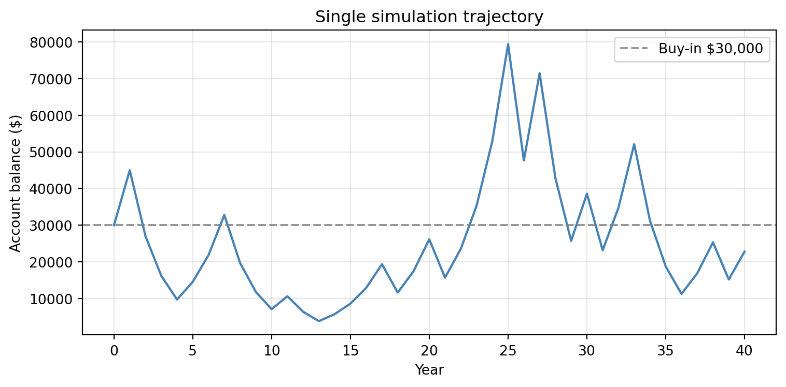
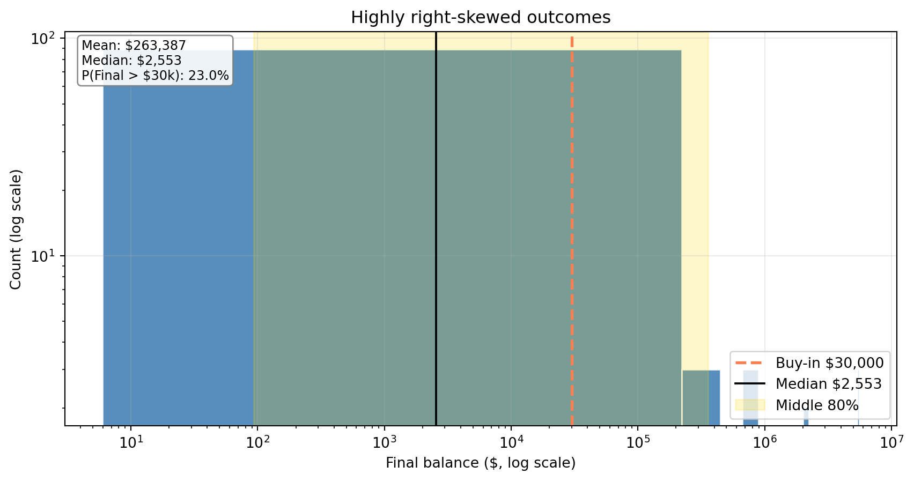
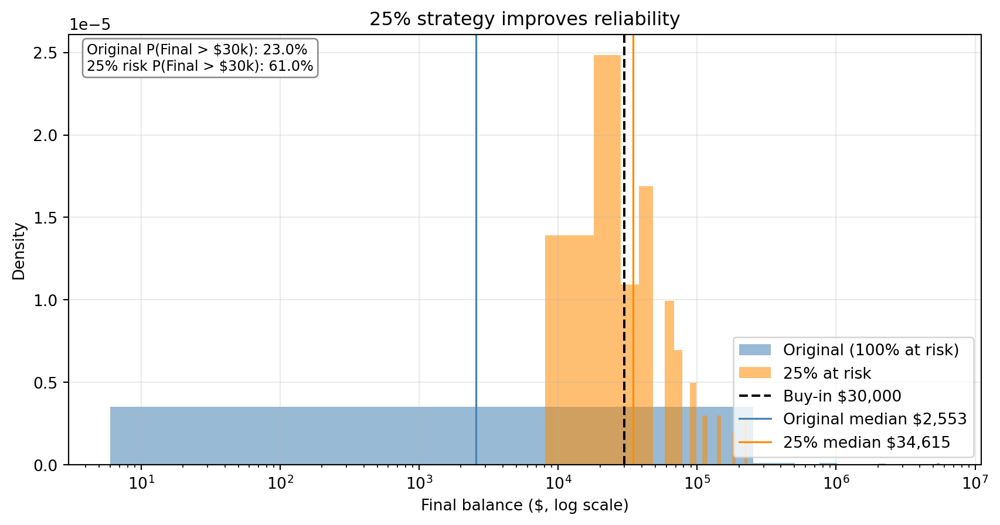

Investment Simulation Decision Brief
Should you buy into the coin-flip strategy?
Executive Summary
This investment has a positive one-year expected return, but that headline result is misleading for a 40-year decision.
When the full account is exposed every year, most paths end below the initial $30,000. A smaller annual bet size (25% of wealth) substantially improves the probability of finishing ahead and aligns with the Kelly-optimal fraction.
Decision: Do not use the full-risk strategy. If participating, use a 25% allocation per year.
Investment Setup
You invest $30,000 now and flip a fair coin annually until age 75:
- Heads: wealth multiplies by 1.5
- Tails: wealth multiplies by 0.6
The process is multiplicative, so long-run outcomes depend on compounding and sequence risk.
Model Structure (Generative DAG)
Results and Interpretation
1) One-Year Attractiveness: Positive Expected Value
Expected wealth after one year is $31,500, a 5.0% expected gain.
Interpretation: the game is attractive on a single-period average-return basis. But retirement decisions should be based on long-run outcome distributions, not one-period expectation alone.
2) Single Path Example: Compounding Risk Is Visible Early

In this run, final wealth is $22,796, below buy-in. One path is not a decision rule, but it demonstrates how drawdowns can persist in multiplicative systems.
3) 100 Simulations: Counter-Intuitive Distribution

Key results:
- Mean final wealth: $263,387
- Median final wealth: $2,553
- Probability of finishing above $30,000: about 23%
This is the main counter-intuitive finding: the average is high, yet the typical investor loses. A few large winners inflate the mean, while most outcomes are poor.
4) Probability of Finishing Ahead (Original Strategy)
The estimated probability of ending with more than $30,000 at age 75 is about 23%. Equivalently, around 77% of paths finish below the initial capital.
Decision implication: for most real investors, this reliability is too low to recommend full-risk participation.
5) Modified Strategy: Risk 25% Per Year

With 25% at risk each year, P(Final > $30,000) rises to about 61%.
Practical interpretation:
- Full-risk strategy offers extreme upside but poor reliability.
- 25% strategy gives up some tail upside in exchange for a much better chance of preserving/growing wealth.
6) Kelly Criterion Interpretation
For this game, the Kelly-optimal fraction is:
[ f^* = - = 0.25 ]
So the model-backed growth-optimal stake is 25% per period, matching the modified strategy.
Final Recommendation
Do not buy into the original full-balance strategy if your objective is a high probability of preserving or increasing capital by age 75.
If participation is required, use the 25%-at-risk strategy. It is the better practical decision because it improves outcome reliability and is consistent with Kelly sizing.